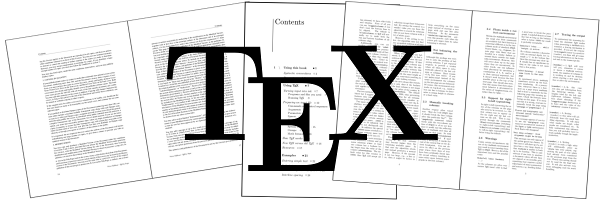
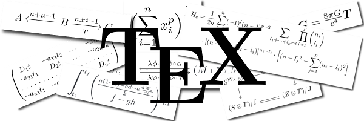
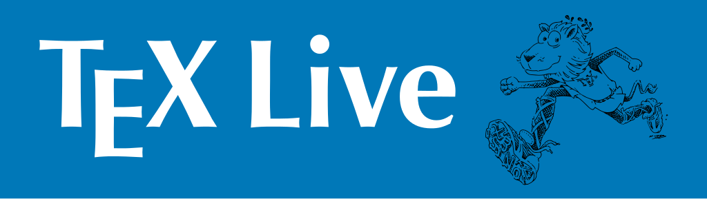
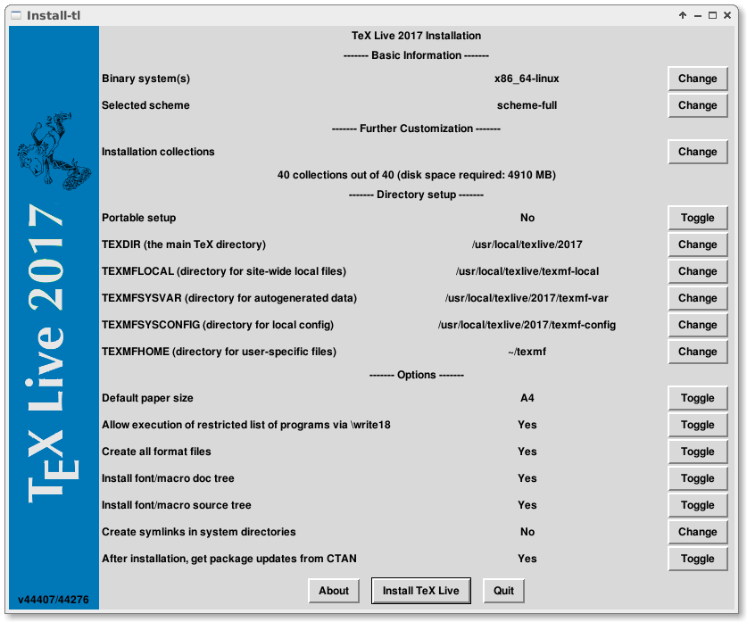

前言
本文讲解如何在Linux下搭建LaTeX学习环境: TeX Live。
TeX简介

TeX（希腊语：/tɛx/[1]，音译“泰赫”，文本模式下写作TeX），是一个由美国计算机教授高德纳（Donald Ervin Knuth）编写的功能强大的排版软件。它在学术界十分流行，特别是数学、物理学和计算机科学界。TeX被普遍认为是一个优秀的排版工具，特别是在处理复杂的数学公式时。利用诸如是LaTeX等终端软件，TeX就能够排版出精美的文本以帮助人们辨认和查找。
子恒喵对TeX排版软件的浅显理解：Microsoft Word的替代品，纯文本+命令行！ ^_^
TeX, LaTeX 与 TeX Distribution

其实世界上只有一个TeX程序，它就叫做 “TeX”, 它是由计算机科学家 D. E. Knuth 设计并且实现的。TeX 不仅是一个排版程序，而且是一种程序语言。LaTeX 就是用这种语言写成的一个“TeX 宏包”，它扩展了 TeX 的功能，使我们很方便的逻辑的进行创作而不是专心于字体，缩进这些烦人的东西。TeX 还有其它的大型宏包，它们和 LaTeX 一起都被叫做 “format”，现在还有一种常用的format叫做 ConTeXt, 用它能方便的作出极其漂亮的幻灯片，动态屏幕文档…… 我们通常用 TeX 都是在用 LaTeX, ConTeXt, 因为 TeX 的底层需要更多的知识才能了解，一般人不需要自己设计自己的格式。
子恒喵的类比说明：
| TeX | LaTeX | TeX Distribution |
|---|---|---|
| 程序设计语言 | 语言的标准库 | 编译器, 开发工具, 第三方库, 说明文档等等的集合 |
非常简洁易懂吧。 ^_^
我们要安装的TeX Live正是一支TeX Distribution。
TeX Live简介

TeX Live是由国际TeX用户组（TeX Users Group，TUG）整理和发布的TeX软件发行套装，包含与TeX系统相关的各种程序、编辑与查看工具、常用宏包及文档、常用字体及多国语言支持。TeX Live是许多Linux/Unix系统（比如Fedora、Debian、Ubuntu、Gentoo以及OpenBSD、FreeBSD、NetBSD等）默认或推荐的TeX套装，同时也支持包括Windows和Mac OS X等在内的其它操作系统。TeX Live是开发状态最为活跃的TeX发行版之一，保持着每年一版的更新频率。TeX Live属于免费软件。
TeX Live是目前最好的TeX发行版，最新版本为2017。
安装TeX Live
子恒喵推荐使用TeX Live的ISO镜像包安装，不要使用yum或apt安装。
Step 1 获取安装镜像
前往Tug的镜像下载站点，下载最新的ISO镜像安装包:
站点地址: https://www.tug.org/texlive/acquire-iso.html
安装包接近4GB，选择最近的镜像站下吧。
Step 2 安装
在安装时需要用到perl的MD5校验与perl-Tk图形界面(可选)。
安装依赖包：
挂载镜像文件：
启动安装脚本，可以选择图形界面，也可以操作命令行：

图形界面下，各种安装选项清晰明了。按情况安装就可以啦。
安装完成后，将安装目录加入到PATH之中：
Step 3 检验安装
|
安装成功！